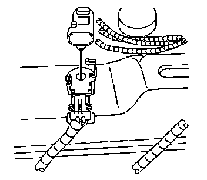

Fuel Tank Pressure Sensor: Service and Repair
Fuel Tank Pressure Sensor Replacement
Removal Procedure
1. Remove the fuel tank. Refer to Fuel Tank Replacement (Service and Repair) .

2. Disconnect the electrical connector from the fuel tank pressure sensor.
3. Open the retaining strap.
4. Carefully pry the locking tabs away from the pressure sensor.
5. Pull upward in order to remove the pressure sensor from the fuel tank.
Installation Procedure
1. Press the fuel tank pressure sensor into the fuel tank, until the locking tabs are fully seated.
2. Close the retaining strap.
3. Connect the electrical connector to the fuel tank pressure sensor.
4. Install the fuel tank. Refer to Fuel Tank Replacement (Service and Repair) .